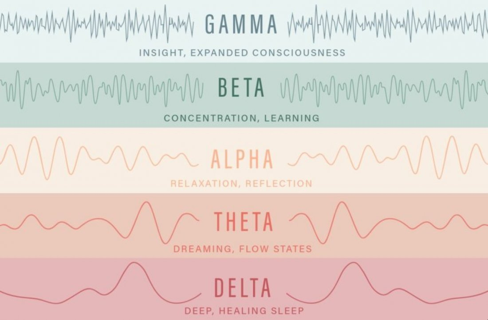

Sóng não
1. Sóng não là gì?
Khoa học ngày nay chứng minh được rằng trong mỗi con người có một dòng điện, và dòng điện này được tìm thấy nhiều nhất ở tế bào tập trung trong não và đó cũng chính là "Nhà máy phát điện".
Sóng não được hình thành bởi quá trình tiếp nhận và xử lý của não bộ đối với cuộc sống, kể từ khi nằm trong bụng mẹ cho đến lúc chết đi, con người luôn phát ra sóng não thích hợp với thời điểm cuộc sống của mình, mỗi hành động trong ngày, mỗi giấc mơ, những hồi ức … tất cả đều có thể sinh ra sóng não.
Mỗi loại sóng não là sự thể hiện khác nhau của Não trong các hoạt động thường ngày của con người; mỗi loại hành động, suy nghĩ sẽ sinh ra một loại sóng não khác nhau.
Tại 1 thời điểm, chỉ có một loại sóng não được sinh ra, Não sẽ không sản sinh hai loại sóng não cùng một lúc, đó là lý do bạn không được nghe 2 loại sóng cùng một lúc.
2. Sóng não có mấy loại?
Sóng não được được chia thành 5 loại (từ tần số thấp nhất đến tần số cao nhất): Delta, Theta, Alpha, Beta và Gamma.

- Sóng não Delta (0.5 - 4 Hz): Giúp đem lại bạn có giấc ngủ sâu, tiết các hormone giúp cân bằng hoạt động sinh học của cơ thể, như điều hoà nhịp tim, tiêu hóa, hơi thở,... Qua đó, quá trình chữa bệnh và tái tạo năng lượng, sức khỏe được kích thích khi cơ thể rơi vào trạng thái này. Và đó là lý do tại sao giấc ngủ sâu phục hồi rất cần thiết cho quá trình chữa bệnh.
- Sóng não Theta (4 - 8 Hz): Đưa não bạn về trạng thái thiền sâu, ổn định từ trong tiềm thức khi tâm lý bạn đang bị nhiễu loạn vì phải đối mặt với nhiều vấn đề cùng lúc và bạn cần sự tỉnh táo để giải quyết. Hơn thế nữa, nó còn giúp bạn đi vào giấc ngủ một cách dễ dàng. Qua đó, khi não bộ và tinh thần được thoải mái, sự sáng tạo và khả năng học hỏi cũng được nâng cao hơn.
- Sóng não Alpha (8 - 12 Hz): Giúp cho tinh thần ở trạng thái đang thư giãn như khi chúng ta ngồi thiền, bình tĩnh, đưa cơ thể về trạng thái nghỉ ngơi. Ngoài ra, nó còn giúp bạn giảm stress, lo lắng, bồn chồn, hỗ trợ điều trị thần kinh,… Đây là trạng thái tốt nhất để chúng ta tư duy, làm việc, giải quyết những tình huống phức tạp, tiếp thu kiến thức mới, ghi nhớ số liệu,...
- Sóng não Beta (12 - 30 Hz): Xuất hiện khi chúng ta tỉnh táo, tập trung giải quyết vấn đề, phán đoán, ra quyết định. Nó tác động đến bán cầu não trái giúp bạn tăng khả năng tập trung, ghi nhớ, học hỏi. Một lợi ích khác của loại sóng này là làm tăng sự tập trung, sự nhạy bén của não bộ, giúp con người cải thiện tính logic, lý tính và tư duy logic hơn.
- Sóng não Gamma (30 - 120 Hz): Giúp não bộ toàn được kích hoạt một cách toàn diện, kết nối các giác quan đem đến cho não mức độ tri thức cao. Từ đó, giúp bạn khai mở tiềm năng não bộ ở mức tốt nhất khiến việc trau dồi, tiếp thu kiến thức được nhanh chóng, hiệu quả.
3. Lợi ích của nhạc sóng não
Nhạc sóng não (Brainwave music) không phải là một khái niệm mới. Nhiều nghiên cứu đã chỉ ra, giai điệu của loại âm nhạc này từng được dùng trong các nghi lễ tôn giáo từ thời đại đồ đồng. Đến thời Hy Lạp, Pythagoras đã tạo ra quy luật âm điệu riêng từ đàn lyre giúp làm dịu tâm trạng nóng giận của con người. Từ đó, âm nhạc được nhìn nhận như một liệu pháp để cân bằng cảm xúc.
Đến năm 1930, khoa học đã xác định được mọi suy nghĩ của con người đều phát ra một dạng sóng đặc biệt. Các nghiên cứu đã đưa ra những kết luận cụ thể hơn vào năm 1960, rằng từng trạng thái tâm lý (ngủ, làm việc, sáng tạo, tập trung, buồn, căng thẳng, …) đều phát ra một loại sóng não đặc thù. Điều này đã mở ra một góc nhìn mới trong việc trị liệu tâm lý khi các chuyên gia có thể dùng tần số đối trọng để cân bằng trạng thái não. Mãi đến thập niên 70, khi sóng âm được mã hóa trên nền kỹ thuật số sơ khai, nhạc sóng não mới thật sự ra đời và ngày càng trở nên phổ biến.
Nhiều năm qua, nhạc sóng não đã chứng minh được hiệu quả trong việc điều chỉnh trạng thái tinh thần và cảm xúc. Dễ thấy nhất là tác dụng chữa bệnh mất ngủ ở người hay bị áp lực, căng thẳng, âu lo. Các bác sĩ tâm lý còn dùng nhạc sóng não để giúp bệnh nhân thả lỏng tâm trí trong quá trình điều trị trầm cảm. Loại nhạc này được xem như một công cụ hỗ trợ giúp việc tập thiền đạt kết quả tốt hơn.
Chính vì mỗi hoạt động của chúng ta đều gắn liền với một loại sóng não đặc thù, chúng ta nên chọn loại nhạc phù hợp với nhu cầu.
4. Những lưu ý khi nghe nhạc sóng não
- Nếu bạn là người bắt đầu nghe nhạc sóng não, hãy tập làm quen dần với những loại nhạc này từ 10 - 15 phút trong một ngày. Dần dần có thể tăng lên 30 phút, hoặc 1 tiếng, thậm chí là vài tiếng.
- Dừng nghe ngay nếu bạn cảm thấy chóng mặt, mệt mỏi.
- Nên đeo tai nghe để giúp nhạc sóng não tác động trực tiếp đến não bộ của bạn. Nếu nghe bằng loa ngoài, sóng nhạc sẽ bị nhiễu bởi thanh âm xung quanh và không đạt hiệu quả cao.
- Có thể bạn đã thấy vài trang web khuyến cáo rằng người từ đủ 26 tuổi trở lên mới nên nghe nhạc sóng não vì não bộ đã phát triển toàn diện. Cho tới hiện nay thì vẫn chưa có bằng chứng khoa học nào chỉ ra nhạc sóng não có thể gây ảnh hưởng xấu đến não bộ.
Sự thật rằng, có rất nhiều người đã bắt đầu nghe những nhạc sóng não này từ khi họ còn rất nhỏ, cho tới hiện nay thì họ chưa hề đề cập gì về những tác hại mà họ đã trải qua suốt nhiều năm.
Bạn có thể tìm những lời bình luận đó từ nhiều trang mang xã hội khác nhau về chủ đề Sóng não (Youtube, Facebook,...).